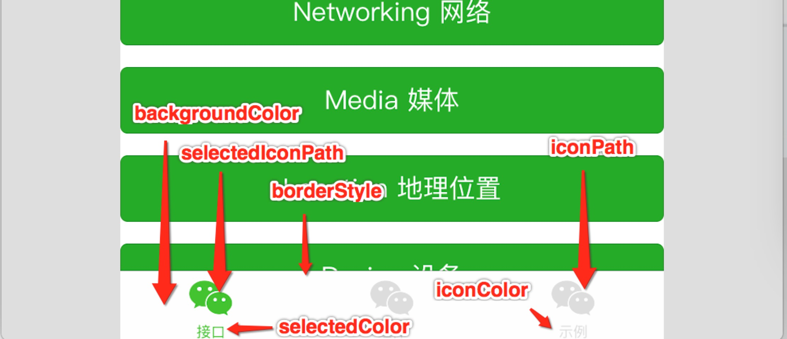

配置
我们使用app.json文件来对微信小程序进行全局配置，决定页面文件的路径、窗口表现、设置网络超时时间、设置多tab等。
每一个小程序页面也可以使用.json文件来对本页面的窗口表现进行配置。 页面的配置比app.json全局配置简单得多，只是设置app.json中的window配置项的内容，页面中配置项会覆盖app.json的window中相同的配置项。
以下是一个包含了所有配置选项的简单配置app.json ：
{
"pages": [
"page/index/index",
"page/logs/index"
],
"window": {
"navigationBarTitleText": "Demo"
},
"tabBar": {
"list": [{
"pagePath": "page/index/index",
"text": "首页"
}, {
"pagePath": "page/logs/logs",
"text": "日志"
}]
},
"networkTimeout": {
"request": 10000,
"downloadFile": 10000
},
"debug": true
}app.json配置项列表
| 属性 | 类型 | 必填 | 描述 |
|---|---|---|---|
| pages | StringArray | 是 | 设置页面路径 |
| window | Object | 否 | 设置默认页面的窗口表现 |
| tabBar | Object | 否 | 设置底部tab的表现 |
| networkTimeout | Object | 否 | 设置网络超时时间 |
| debug | Boolean | 否 | 设置是否开启debug模式 |
pages
接受一个字符串数组，来指定小程序由哪些页面组成。每一项代表对应页面的【路径+文件名】信息，数组的第一项代表小程序的初始页面。小程序中新增/减少页面，都需要对pages数组进行修改。
文件名不需要写文件后缀，因为MINA会自动去寻找路径.json,.js,.wxml,.wxss的四个文件进行整合。
如开发目录为：
page/
page/index/index.wxml
page/index/index.js
page/index/index.wxss
page/logs/logs.wxml
page/logs/logs.js
app.js
app.json
app.wxss
则，我们需要在app.json中写
{
"pages":[
"page/index/index"
"page/logs/logs"
]
}window
用于设置小程序的状态栏、导航条、标题、窗口背景色。
| 属性 | 类型 | 默认值 | 描述 |
|---|---|---|---|
| navigationBarBackgroundColor | HexColor | #000000 | 导航栏背景颜色，如"#000000" |
| navigationBarTextStyle | String | white | 导航栏标题颜色，仅支持 black/white |
| navigationBarTitleText | String | 导航栏标题文字内容 | |
| backgroundColor | HexColor | #ffffff | 窗口的背景色 |
| backgroundTextStyle | String | dark | 下拉背景字体、loading图的样式，仅支持dark/light |
| enablePullDownRefresh | Boolean | false | 是否开启下拉刷新 |
注：HexColor（十六进制颜色值），如"#ff00ff"
如app.json：
{
"window":{
"navigationBarBackgroundColor":"#ffffff",
"navigationBarTextStyle":"black",
"navigationBarTitleText":"微信接口功能演示",
"backgroundColor":"#eeeeee",
"backgroundTextStyle":"light"
}
} 页面的.json只能设置window相关的配置项，以决定本页面的窗口表现，所以无需写window这个键，如：
{
"navigationBarBackgroundColor":"#ffffff",
"navigationBarTextStyle":"black",
"navigationBarTitleText":"微信接口功能演示",
"backgroundColor":"#eeeeee",
"backgroundTextStyle":"light"
}
tabBar
如果我们的小程序是一个多tab应用（客户端窗口的底部有tab栏可以切换页面），那么我们可以通过tabBar配置项指定tab栏的表现，以及tab切换时显示的对应页面。
tabBar是一个数组，只能配置最少2个、最多5个tab，tab按数组的顺序排序。
属性说明：
| 属性 | 类型 | 必填 | 默认值 | 描述 |
|---|---|---|---|---|
| color | HexColor | 是 | tab上的文字默认颜色 | |
| selectedColor | HexColor | 是 | tab上的文字选中时的颜色 | |
| backgroundColor | HexColor | 是 | tab的背景色 | |
| borderStyle | String | 否 | black | tabbar上边框的颜色， 仅支持 black/white |
| list | Array | 是 | tab的列表，详见list属性说明，最少2个、最多5个tab |
其中list接受一个数组，数组中的每个项都是一个对象，其属性值如下：
| 属性 | 类型 | 必填 | 说明 |
|---|---|---|---|
| pagePath | String | 是 | 页面路径，必须在pages中先定义 |
| text | String | 是 | tab上按钮文字 |
| iconPath | String | 是 | 图片路径，icon大小限制为40kb |
| selectedIconPath | String | 是 | 选中时的图片路径，icon大小限制为40kb |

networkTimeout
可以设置各种网络请求的超时时间。
属性说明：
| 属性 | 类型 | 必填 | 说明 |
|---|---|---|---|
| request | Number | 否 | wx.request的超时时间，单位毫秒 |
| connectSocket | Number | 否 | wx.connectSocket的超时时间，单位毫秒 |
| uploadFile | Number | 否 | wx.uploadFile的超时时间，单位毫秒 |
| downloadFile | Number | 否 | wx.downloadFile的超时时间，单位毫秒 |
debug
可以在开发者工具中开启debug模式，在开发者工具的控制台面板，调试信息以info的形式给出，其信息有Page的注册，页面路由，数据更新，事件触发 。 可以帮助开发者快速定位一些常见的问题。